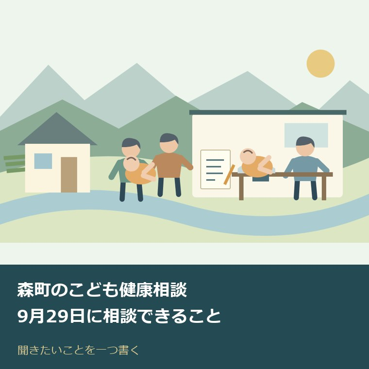
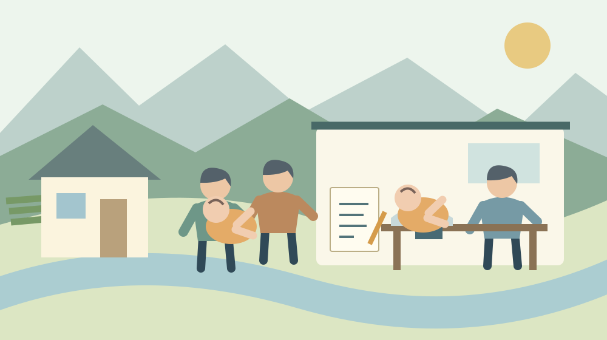
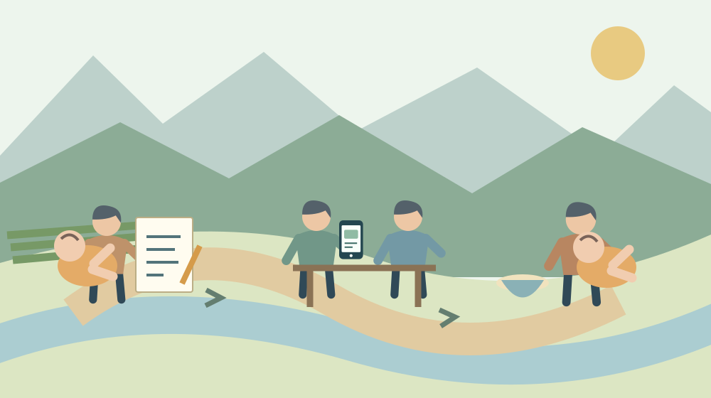

森町のこども健康相談｜9月29日に相談できること
／ 手続き・制度

Q. 森町で子どもの体重や離乳食を相談したい。9月29日は何を相談できますか？
森町のこども健康相談は2026年9月29日（火）、保健福祉センターで予約制の対面相談を予定しています。体重測定や離乳食・食事の相談が可能です。年度ガイドは9時30分～11時、1人15分と案内していますが、別の公式ページは9時～の個別案内です。0538-86-6330へ来場時刻と予約方法を確認し、今日は聞きたいことを一つ書いてください。
相談へ出かける前にも、育児の仕事がある
子どもの体重や離乳食が気になっても、相談先を探す時間を取れないことがあります。食事の準備、着替え、寝かしつけを続けながら、外出用の荷物もそろえる。家族の予定に合わせて車を使うなら、その調整も必要です。森町で日々の育児を回している保護者に、さらに準備の負担を積み上げたくありません。
私、大石浩之（磐田市／不動産業）は、相談窓口を紹介するとき、場所と名前だけでは足りないと考えます。何を相談できるか。予約をどこへ確認するか。何時に着けばよいか。2026年9月29日の「こども健康相談」について、出発前に確かめられる段取りを整理します。
この記事は健康状態を判定するものでも、相談会に参加した体験談でもありません。2026年9月14日に森町の公式ページと令和8年度の保健ガイドを確認しました。公表された案内と私の準備の提案を分けて書きます。今日は聞きたいことを一つ書くところまでで構いません。
9月29日はオンラインではなく、保健福祉センターの対面相談
森町公式「オンライン『こども健康相談』をご利用ください」のページには、対面相談の案内も載っています。令和8年度の日程として2026年9月29日（火曜日）を掲載し、会場は森町保健福祉センター、受付は9時30分から11時、予約が必要としています。
見出しに「オンライン」とあるので、自宅から画面越しに相談する日程だと思うかもしれません。しかし、9月29日は同じページ内の来所相談の案内です。年度ガイドでも来所の会場が示されています。ページのタイトルだけで参加方法を決めず、日程が書かれた段落と会場まで合わせて読んでください。
| 確認する項目 | 掲載内容と予約時の確認 |
|---|---|
| 開催予定日 | 2026年9月29日（火曜日） |
| 会場 | 森町保健福祉センター。年度ガイドでは2階健診室 |
| 受付・相談時間 | 年度ガイドは9時30分～11時、1人15分ずつ予約制。別ページは9時～個別案内のため来場時刻を確認 |
| 相談内容 | 体重測定、離乳食・食事、発育・発達など |
| 予約の確認先 | 健康こども課こども家庭係 0538-86-6330 |
| 今日の準備 | 聞きたいことを一つ書く |
「令和8年度森町こども保健ガイド」の対象期間は2026年4月から2027年3月です。こども健康相談欄に9月29日を掲載し、9時30分から11時、1人15分ずつ予約制と案内しています。会場は保健福祉センター2階健診室です。9時30分から11時までを、一人が自由に使える時間と読まないでください。
一方、町の子育て応援サイト「もりっこ」の「乳幼児の健診・相談」は、受付時間を9時からの個別案内としています。公式資料同士で開始時刻の表記が一致していません。この記事では年度ガイドの時間を示しつつ、予約時に自分の来場時刻を係へ確認する案内とします。9時と9時30分のどちらかへ推測で統一しません。
体重、離乳食、保護者自身のことを相談できる
森町の対面のこども健康相談は、希望により子どもの体重測定や離乳食・食事の相談が可能です。「もりっこ」の案内では、発育・発達、授乳や離乳食、保護者自身のことも相談できるとしています。年度ガイドには、身体測定だけでも行えるという記載があります。
体重を測ってもらうことと、その数字について何を聞きたいかは分けて考えられます。私は「体重のことで心配している」と一文にして持って行く方法を勧めます。家庭で量った記録があれば日時を添えればよく、記録がないから相談できないと自分で決める必要はありません。
この記事では、体重の増え方が正常かどうか、食事量が足りているかどうかを判定しません。同じ数字でも、その子の経過や生活の様子を聞かなければ判断できないためです。相談したい数字がある場合は、数字を根拠に結論を出す前に、保健の専門職へ何を確認したいかを言葉にします。
離乳食については、困っている一場面から質問を作れます。「用意したものをどのくらい食べているのか気になる」「食事の時間をどう組めばよいか聞きたい」などです。ここに挙げたのは質問の例です。食材、量、進め方について個別の指示を出す記事ではありません。
保護者自身のことも相談対象に含まれる点は、体重測定だけの案内からは見えにくいところです。準備や食事の世話を一人で抱えているなら、その困りごとを話す入口にもなります。質問を子どもの数字だけに限定せず、「毎日の何が負担か」を一つ書くことも準備になります。

森町での移動は、会場名と予約時刻から組む
森町保健福祉センターの所在地は、静岡県周智郡森町森50-1です。町の施設案内では健康こども課のほか、児童館なども入る複合施設とされています。同じ建物に複数の窓口があるので、家族へ行き先を伝える際は「保健福祉センターのこども健康相談」まで書くと区別できます。
年度ガイドでは会場を2階健診室としています。私は、駐車や入口からの移動も含め、予約時に到着後の受付場所を聞くことを勧めます。この記事では駐車場の空きや当日の館内動線を実地確認していません。子どもを抱えながら部屋を探さずに済むよう、分からない部分を先に聞く提案です。
送迎する家族と相談に同席する家族が違う場合、帰りの連絡方法も一つ決めます。相談の枠が15分と書かれていても、移動や受付を含む外出全体が15分で済むわけではありません。帰宅予定を分単位で約束しすぎず、仕事やきょうだいの迎えと重ならないか見ておきます。
暮らす場所から子育ての利用先を考える視点は、森町での子育てと移住を考える記事でも扱っています。相談先までの距離だけで住みやすさを決めず、予約、移動、普段の買物や家族の勤務時間と一緒に見てください。今回なら、まず相談の来場時刻を確定させる順番です。
良い点は、測定だけでも相談の入口にできること
森町の年度ガイドは、こども健康相談で身体測定だけでも行えると案内しています。大きな相談内容を用意しなければ利用できない窓口ではないと読み取れます。私は、体重を確かめたいという具体的な用事から、人に聞く接点を持てる点を評価します。
発育や食事のことだけでなく、保護者自身についても話せる窓口なら、育児の担い手の負担を言葉にできます。子どもの世話は、食事を出せば終わりではありません。買物、準備、片付けまで続きます。私は、相談のためにその努力を説明する機会があることにも意味を感じます。
オンラインと来所の両方が用意されている点も、相談したい内容で選ぶ手がかりになります。町の「乳幼児の健診・相談」は、身長や体重の測定を希望する場合は来所するよう案内しています。移動を減らしたい場合でも、測定が目的なら来所の必要性を先に確認できます。
私は、オンラインなら常に楽、対面なら必ずよいとは決めません。自宅で話しやすい家庭もあれば、測ってもらってから聞きたい家庭もあります。どちらを選ぶか考える材料があることが利点です。9月29日の対面相談を、そのまま同日オンラインへ変更できるという意味ではありません。
注文したい点は、公式の時間・年齢・持ち物の表記差
森町のこども健康相談については、公式資料の表記を一つにそろえて読めない箇所があります。時間だけでなく、対象年齢と持ち物にも違いがあります。私は、保護者が育児の合間に複数のページを突き合わせなくても済むよう、予約案内の入口で差が解消されることを望みます。
対象年齢は「もりっこ」のページでは3歳未満、年度ガイドでは3歳までと記載されています。3歳の誕生日を迎えた子どもを含むかは、この表現の違いから断定できません。予約の際に子どもの生年月日と相談したい内容を伝えて、対象か確認してください。記事側で年齢の境界を広げません。
持ち物は年度ガイドでは母子健康手帳です。「もりっこ」のこども健康相談欄には、母子健康手帳、バスタオル、子どもノートが挙がっています。母子健康手帳は両方に共通しますが、どれだけ持てば足りるかは予約時に確認するのが確実です。家族が準備を分担する場合は、確認後の一覧を渡します。
表示更新日にも注意が要ります。9月29日を載せるオンライン案内ページの更新日は2025年4月1日です。本文には令和8年度の日程が掲載されています。更新日の古さだけで今年度の日程を無視せず、かといって本文全体が同時に更新されたと決めつけず、年度と該当箇所を照合しました。
私は、予約フォームを案内すればそれで親切かどうかに迷いました。同じページにはオンライン相談の入力フォームと確定連絡の流れがあるからです。対面の9月29日にそのまま使えるかは確認できていません。そこでこの記事では、健康こども課こども家庭係へ対面の予約方法を確認する順番にしています。
9月29日の空き枠、予約の締切、費用の扱いは、確認した資料だけでは確定できません。特に無料とは断定しません。電話で「9月29日の対面相談を希望します」と伝え、予約の可否、来場時刻、持ち物を聞く形なら、窓口名の似た別の相談との取り違えも避けやすくなります。

対案・結論：今日は聞きたいことを一つ書く
9月29日のこども健康相談へ向けて今日できる一歩は、聞きたいことを一つ書くことです。体重、食事、発育、保護者自身の負担のうち、いちばん先に話したいことを選びます。質問を全部そろえてからでなければ予約できないと考えず、一つの疑問を窓口に伝える準備にします。
私の提案は、最初の一文を「私は何が気になっているか」で作ることです。「食べる量が気になる」と書いたら、余裕があれば、いつの食事でそう感じたかを添えます。ここで食事の良し悪しを自己採点する必要はありません。専門職に聞きたい場面を具体的にするためのメモです。
電話で問い合わせる際は、健康こども課こども家庭係の0538-86-6330を使います。「9月29日の保健福祉センターでのこども健康相談について、予約方法と空きを確認したい」と伝えられます。生年月日、希望する相談内容を説明できるようにし、係から必要な確認を受けてください。
予約の案内を受けたら、日付と時刻だけでなく、対面かオンラインかも書きます。来所なら受付場所と持ち物、オンラインを別に選ぶなら接続方法を確認します。予定表の欄に「相談」だけを入れると、家族が別の窓口と取り違えることがあるため、相談の正式名を残す提案です。
母子健康手帳を取り出す人、持ち物を確かめる人、当日連れて行く人を分けられるなら、役割も記録します。電話一本を任せるだけでも、普段の育児を担う人が別の用事を進める時間になります。手伝う側は「何でも言って」だけで終えず、今日できる一つの作業を具体的に申し出られます。
体調不良の際については、令和8年度の保健ガイドが事前連絡を求めています。予約が取れたからと無理に来所する前提にはしないでください。急な体調の変化について医療判断が必要なら、9月29日の相談日を待つのではなく医療機関などへ相談する領域です。この記事は受診の要否を判断するものではありません。
家族に残す記録は、相談で聞いたことと次にすること
こども健康相談の後に残す記録は、相談した日、聞いた内容、次に確認することを分けると家族が読めます。私は、短いメモで足りると考えます。丁寧な育児日記を新たに作る義務にせず、相談へ行けなかった家族にも何を話したか伝わる形を目指します。
体重などの測定値を残す場合は、測った日と一緒に書きます。相談で聞いた説明と、帰宅後に自分で考えたことも欄を分けます。専門職の説明を後から思い込みで補わないためです。分からなかった言葉があれば、次回の相談で聞き直す質問としてそのまま残せます。
日々の遊び場や親子の交流を探す場合は、9月の移動子育て支援を確認する記事も別の入口になります。健康相談と子育て支援の活動は、目的も日程も同じではありません。9月29日の予約に、他の行事への参加まで含まれると取り違えないようにします。
預け先の必要性が話題になる家庭なら、こども誰でも通園制度と一時預かりの違いを整理した記事で利用の目的を分けて考えられます。健康相談の予約を取ることと、預かりを申し込むことは別の手続きです。必要になった順に確認すればよく、同日に全部を決める必要はありません。
大石の視点：使える支援は、誰がいつ動くかまで見えている
森町に相談先があるだけでは、育児の負担は減りません。予約を取る人と連れて行く人が決まって、初めて使える支援になります。私は、制度の立派さより、家族が実際に動ける段取りで考えたいです。これは町の窓口を否定する話ではなく、その窓口につなぐ手前の負担にも目を向ける判断です。
不動産の仕事で住まいを考えるときも、建物だけでは暮らしは決まりません。買物や通院、家族が仕事へ出る時間と同じように、子どもの相談先へ行けるかも生活の条件です。ここでは特定の家族の実話を示しているのではなく、私が住まいを見る際の考え方として書いています。
町の人が続けている育児と送迎を認めたうえで、相談の担い手につながる一歩を小さくしたいと思います。空き枠や表記差を家族だけで推測する代わりに、係へ一度確認する。普段の育児を担っている人の横で、別の家族が予約方法を聞く役を引き受けることも、その一歩です。
9月29日の予約を確かめ、質問を持って相談へ
森町の2026年9月29日のこども健康相談は、保健福祉センターで行う予約制の対面相談です。体重測定や離乳食・食事などを相談できます。年度ガイドは9時30分から11時、1人15分ずつとしていますが、実際の来場時刻は予約時の案内で確認してください。
まず今日、聞きたいことを一つ書いてください。その後、0538-86-6330へ対面の予約方法と空きを確かめ、持ち物と受付場所をそろえます。出発前には公式情報の変更も確認します。家庭の中で答えが出ていない疑問を、人に聞ける形にするところから相談は始められます。
よくある質問
森町の相談窓口を利用する前に、次の3点を確認できます。
9月29日のこども健康相談はオンラインですか？
2026年9月29日は、森町保健福祉センターでの対面のこども健康相談の日程です。オンライン案内ページ内に対面日程が掲載されています。年度ガイドは2階健診室、9時30分～11時、1人15分ずつ予約制としています。別の公式ページでは9時からの個別案内のため、実際の来場時刻は予約時に確認してください。
体重を測ってもらうだけでも相談できますか？
令和8年度森町こども保健ガイドには、こども健康相談で身体測定だけでも行えると記載されています。町の案内では、希望により体重測定や離乳食・食事の相談が可能です。測定を希望する場合は来所の相談を確認してください。利用は予約制です。年齢条件は公式資料に表記差があるので、生年月日を伝えて対象か確かめてください。
予約方法と持ち物はどこへ確認すればよいですか？
健康こども課こども家庭係の0538-86-6330へ、9月29日の対面相談の予約方法・空き・来場時刻を確認してください。持ち物は年度ガイドでは母子健康手帳、別の町公式ページでは母子健康手帳・バスタオル・子どもノートです。予約時の案内で必要な物を確認します。オンライン用フォームが対面にも使えるかは未確認です。

参考にした公式情報
- 森町『オンライン「こども健康相談」をご利用ください』内の対面相談日程。表示更新日2025年4月1日（2026年9月14日確認）
- 森町『乳幼児の健診・相談』2026年4月15日更新。時間・対象・持ち物・相談内容（2026年9月14日確認）
- 森町『令和8年度森町こども保健ガイド』1ページ。9月29日・予約時間・会場を確認（2026年9月14日確認）
- 森町『森町保健福祉センター』2023年5月8日更新。所在地と施設構成（2026年9月14日確認）
最終確認日：2026-09-14。制度・開催状況は変更される場合があります。最新情報は公式窓口へ、個別の法律・登記・医療上の判断は各専門家へ確認してください。